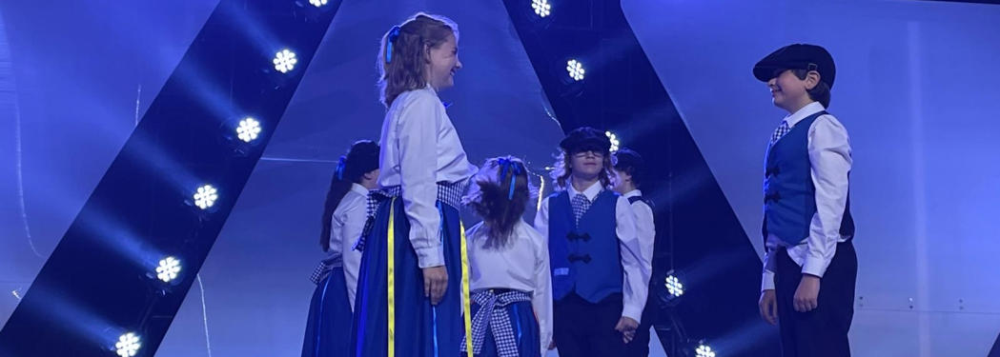
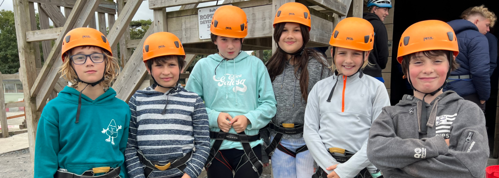
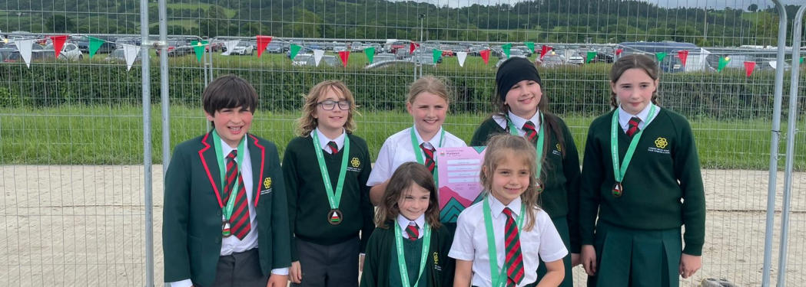

Eisteddfod yr Urdd
Mae plant yn paratoi ar gyfer canu, actio, llefaru, celf, coginio, dylunio a llawer mwy. Cynhelir rownd 'Tu Allan i Gymru' i sicrhau lle yn y prif ddigwyddiad yng Nghymru.
Cymuned / Community
Mae perthyn yn rhan o'r dysgu: ar y sân, mewn dathliadau, ar lwyfan yr Eisteddfod ac mewn digwyddiadau teuluol.

Mae plant yn paratoi ar gyfer canu, actio, llefaru, celf, coginio, dylunio a llawer mwy. Cynhelir rownd 'Tu Allan i Gymru' i sicrhau lle yn y prif ddigwyddiad yng Nghymru.

Mae dyddiau olaf tymor yr haf yng Ngwersyll yr Urdd, Llangrannog, yn brofiad teuluol a chymunedol sy'n adeiladu hyder a chyfeillgarwch.

Mae Halibalŵ, Carnifal Hanwell, Light up the Lane, diwrnodau agored a'r BarBCiw blynyddol yn dod â theuluoedd a ffrindiau at ei gilydd.
Mae Cymdeithas Rhieni, Athrawon a Ffrindiau yn rhoi cyfle i rieni gyfrannu, codi arian a chreu'r teimlad cymunedol sy'n gwneud yr ysgol yn arbennig.
Mae'r ysgol hefyd yn cysylltu â Chanolfan Cymry Llundain, y capeli, yr Eisteddfod Genedlaethol a rhwydweithiau Cymraeg eraill ar draws y ddinas.
New parents are warmly encouraged to join in, even before they know everyone.